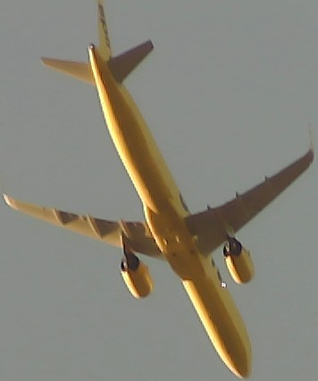
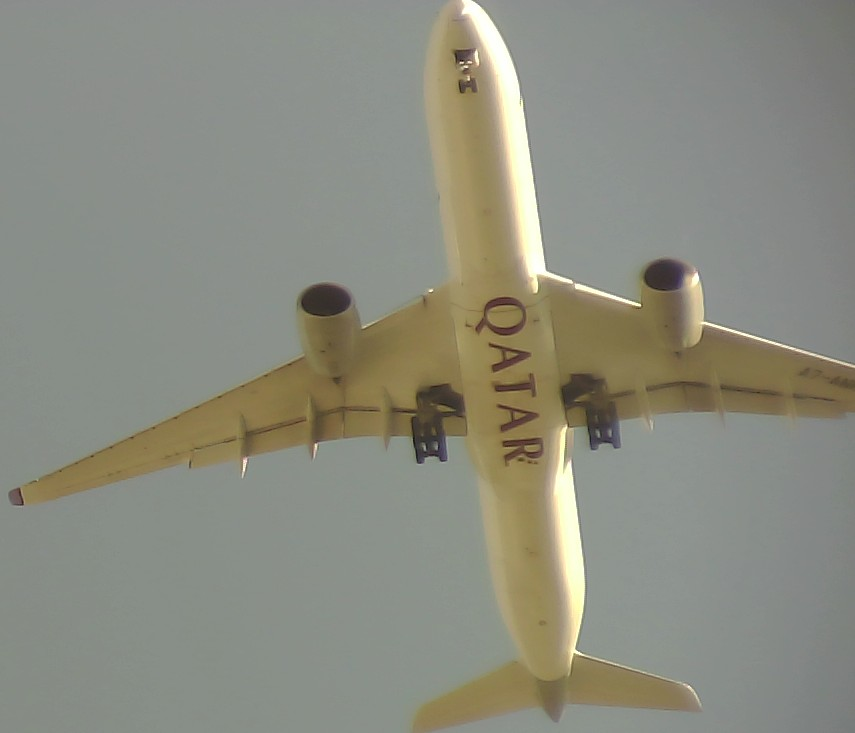
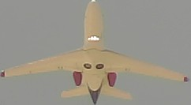
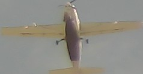
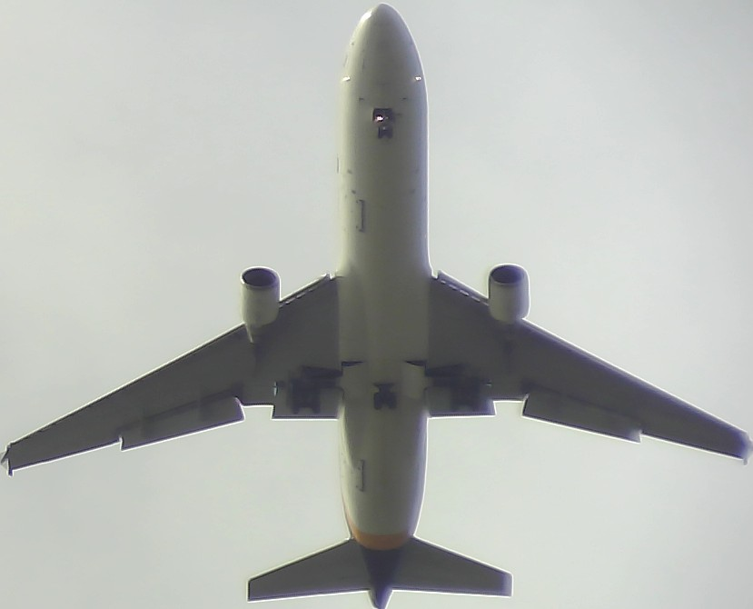
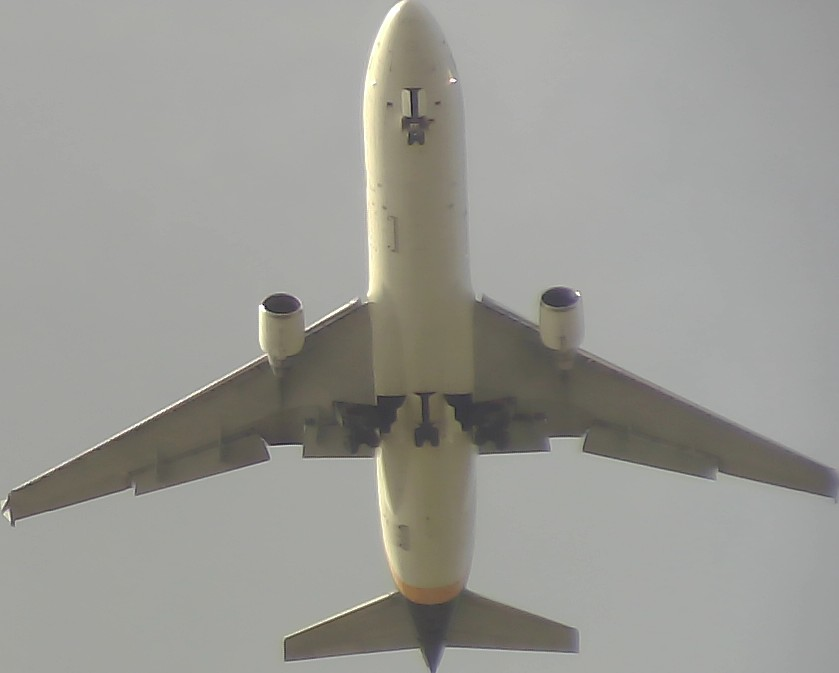
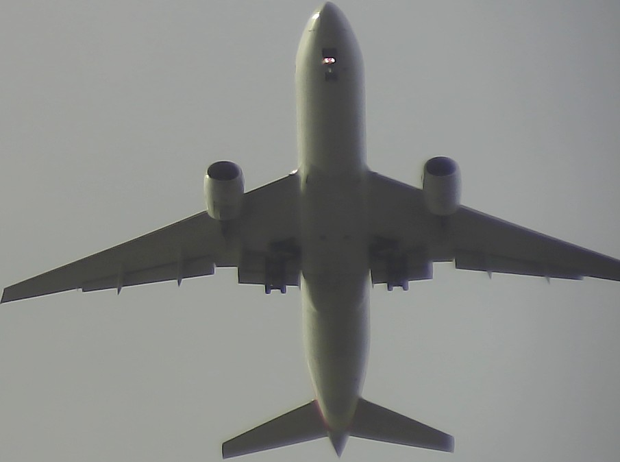
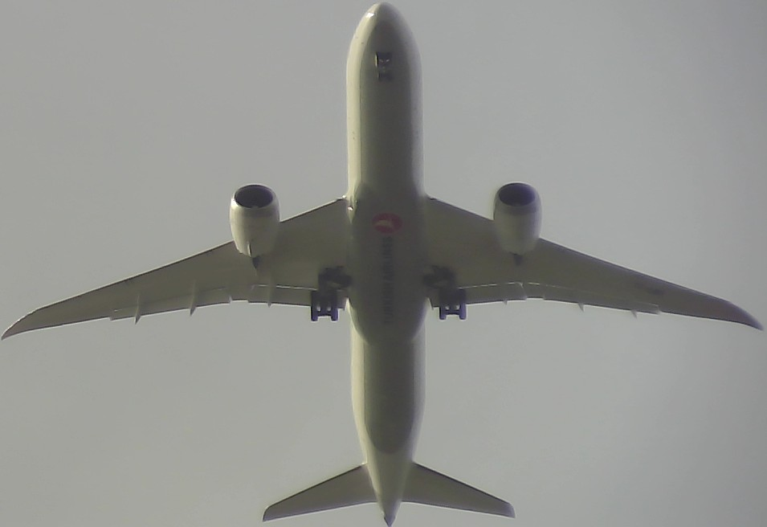
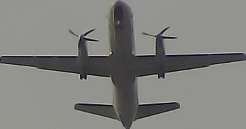

Click here to see live flight data and airplane pictures.

The plane spotter is a Python program that uses a software defined radio (SDR) to capture overhead flight data, and a type of AI called the Convolutional Neural Network (CNN) to capture the airplane picture. The data and pictures are stored on a Google Cloud Storage S3 bucket as an html document for viewing.
Click here to see the Python code.
Some examples
2025-05-12 19:44:36
Aircraft: a9bb0c | Type: A321 271NXSL | Flight: NKS2358 | Altitude: 2825 feet | Speed: 244 knots | Vertical Speed: 1344 feet/min
2025-05-13 08:56:04
Aircraft: 06a12e | Type: A350 1041 | Flight: QTR16C | Altitude: 2575 feet | Speed: 152 knots | Vertical Speed: -832 feet/min
2025-05-13 13:17:09
Aircraft: a68dd1 | Type: Phenom 300 E | Flight: JTZ521 | Altitude: 2925 feet | Speed: 163 knots | Vertical Speed: -1152 feet/min
2025-05-13 10:10:46
Aircraft: ab00a9 | Type: 208 B | Flight: FDY404 | Altitude: 2625 feet | Speed: 119 knots | Vertical Speed: -384 feet/min
2025-05-13 17:45:48
Aircraft: a2e9cc | Type: MD-11 F | Flight: UPS2752 | Altitude: 2725 feet | Speed: 162 knots | Vertical Speed: -896 feet/min
2025-05-14 17:17:24
Aircraft: 4d0131 | Type: 747 4EVERF | Flight: CLX73J | Altitude: 2675 feet | Speed: 160 knots | Vertical Speed: -768 feet/min
2025-05-14 17:32:46
Aircraft: a2feb8 | Type: MD-11 F | Flight: UPS2752 | Altitude: 2675 feet | Speed: 159 knots | Vertical Speed: -832 feet/min
2025-05-14 18:31:08
Aircraft: aa5f41 | Type: 777 223ER | Flight: AAL153 | Altitude: 2650 feet | Speed: 162 knots | Vertical Speed: -896 feet/min
2025-05-14 18:39:13
Aircraft: 4bb1a2 | Type: 787 9 | Flight: THY83J | Altitude: 2650 feet | Speed: 153 knots | Vertical Speed: -832 feet/min
2025-05-14 18:49:28
Aircraft: adcc99 | Type: 340 F | Flight: AMF3115 | Altitude: 2725 feet | Speed: 146 knots | Vertical Speed: -576 feet/min
2025-05-14 19:36:24
Aircraft: 344305 | Type: A330 302 | Flight: IBE0363 | Altitude: 2700 feet | Speed: 140 knots | Vertical Speed: -704 feet/min